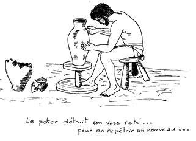

...קִבַּלְתִּי... מָסַרְתִּי
Ce principe, fondamental pour Yehudaha-Nasi et tous les Sages de la tradition rabbinique [cf. Pirqé Avot,mishnah I 1 ; 1 Corinthiens 15:3, etc.], me semble valable aussi pour ceux qui veulent étudier l'hébreu biblique.
Avec ce principe, on peut parfaitement éviter la momifiante fixité d'une fidélité littérale et vivre un renouvellement permanent dans la compréhension du contenu étudié et de ses significations. Comment ?
En adoptant l'attitude de l'artisan potier :
וְנִשְׁחַת הַכְּלִי אֲשֶׁר הוּא עֹשֶׂה בַּחֹמֶר בְּיַד היּוֹצֵ֑ר וְשָׁב וַיַּעֲשֵׂהוּ כְּלִי אַחֵר כַּאֲשֶׁר יָשַׁר בְּעֵינֵי הַיּוֹצֵר לַעֲשׂוֹת׃
(Jérémie 18:4)
"Et si le plat qu'il formait de l'argile était gâché dans ses mains, alors le potier recommençait et formait un autre plat, comme il est bon que fasse un potier."
|

|
|
Traduction de François BON et Léo LABERGE dans "La Bible, nouvelle traduction" (Bayard, Paris, 2001), choisie, je l'avoue, parce qu'elle "colle" mieux que d'autres au sens de mon propos.
|
J'ai, pendant plusieurs dizaines d'années, beaucoup reçu (קִבַּלְתִּי) de divers enseignants, en direct ou grâce à leurs écrits récents ou posthumes, et souvent essayé de transmettre (מָסַרְתִּי) à d'autres le mieux possible.
C'est le but de ce petit site-web : partager non seulement ce que j'ai reçu, mais aussi le plaisir du potier qui met toute son inventivité et sa rigueur au service d'une transmission la plus fidèle possible du trésor qu'il a lui-même reçu.
Avec toutes mes excuses pour les coquilles ou erreurs qui auraient pu échapper à ma vigilance.
Vous trouverez dans ce site :
► Un petit cours de grammaire intitulé :
Éléments de base pour une grammaire de l'hébreu
|
|
► Des
tableaux de conjugaison
des verbes
1
:
-
Généralités. Les binyanîm
-
Conjugaison théorique et verbe "shalém"
-
verbe avec gutturale
-
verbe avec Alef quiescent
-
verbe avec Nun
-
verbe avec Yod ou Waw
-
verbe géminé
-
verbes complexes
-
verbes hybrides (et défectifs)
-
verbes irréguliers ou "à problème"
|
|
|
►
Un "Répertoire Lexical" de tous les verbes
2
de l'hébreu biblique, numérotés de 1à 1407
[avec 1 supplément pour les 184 verbes en araméen]
|
|
|
► un mémoire sur le Waw conversif
et la syntaxe de l'hébreu biblique
|
|
|
|
► les Te'amim pour "savourer" l'hébreu
► et quelques dossiers (en vrac) sur ...
-
... des mots,
-
... des racines,
-
... ou des thèmes... bibliques.
|
► et quelques autres dossiers de grammaire :
-
l'article défini
-
le nom avec suffixes personnels
-
les pronoms personnels
-
les pronoms מה et למה
|
1
. En particulier le document 3.000 "Liste codée des tableaux de conjugaison" pour s'y retrouver dans ces nombreuses grilles.
2
. Ou plus exactement "les racines verbales" ; en effet, comme dans la plupart des dictionnaires, ZaMaR (זמר) par exemple, a le numéro 279, quel que soit le binyan (pa'al, nif'al ou pi'él) dans lequel il est conjugué.